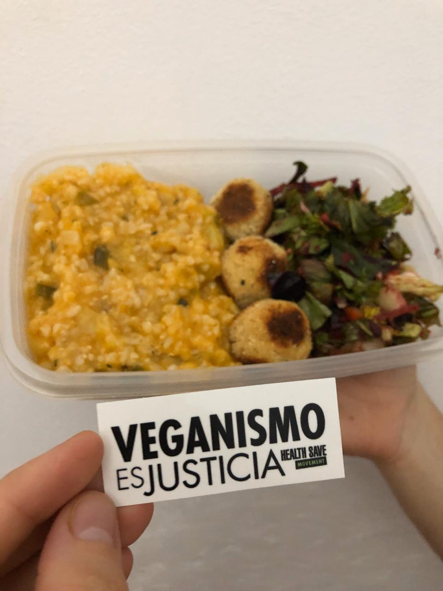

Activistas por una alimentación vegana saludable, justicia social y derechos animales



Formas de Colaborar
- Donaciones de alimentos, fondos, vestimenta: podes contectarte con nosotros o con cualquiera de nuestros puntos de donaciones para coordinar
- Asistir como voluntario: podes postularte para el barrio que te quede más cerca
- Elementos de higiene y limpieza: tanto para las cocinas como para prevencion del COVID-19
- Difusión de nuestra organización: con amigues y familia
Actividades
- Voluntariado: preparamos y repartimos viandas veganas semanalmente
- Charlas: podemos ir a eventos, universidades, colegios o ferias a las cuales nos inviten a hablar sobre alimentación saludable
- Stands: en ferias o festivales, vamos aa donde nos den el espacio para recibir donaciones, dar degustación o venta de comida, remeras o articulos para recaudar fondos